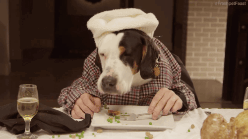

Puppy Chow

Description
A sweet and salty treat you will love.
Although it's called puppy chow, this treat contains chocolate and shouldn't be shared with pups. Sorry, Fido.
Ingredients
- Chocolate
- Peanut Butter
- Rice Chex Cereal
- Powdered Sugar
Steps
- Melt peanut buter and chocolate
- Stir melted mixture and coat the cereal
- Coat in powerded sugar
- Chill